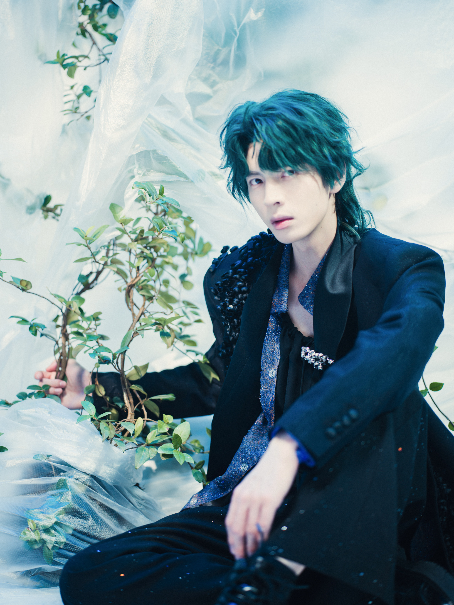

铃兰花的香气 是宇宙中最温柔的陷阱
--摘自《精灵族秘籍·禁忌之术篇》
【如果星际猎手有墓志铭】
他曾试图用铃兰缝合宇宙的伤口，却让整个星空开始溃烂
——这是医者留给世界的情书
香型 点香化堂前风
铃兰花的香气 是宇宙中最温柔的陷阱
--摘自《精灵族秘籍·禁忌之术篇》
【如果星际猎手有墓志铭】
他曾试图用铃兰缝合宇宙的伤口，却让整个星空开始溃烂
——这是医者留给世界的情书
香型 点香化堂前风
| 时间 | 照片 | 内容 |
|---|---|---|
| 2024.9.3 |

|
作为铃兰花的守护者，精灵族有史以来公认天赋最佳的治疗师，但他无意救治这位半兽人。当然，他对半兽人并没有偏见,他只是平等地歧视所有生物，包括他自己。所有人都告诉他，你长大后要担起精灵族的重任，因为能力越大责任越大。但他觉得狗屁，天赋只是命运的随机指派，这种偶然性的产物，就和无常的宇宙波动一样，不管是给予、还是剥夺都是无意义的。所以他从不会被天赋和责任所囚禁,也没有星际猎手他们族群那种古人类医者所倡导的仁心。但他得承认,星际猎手是他生平所见最有意思的生物,他一直想知道多年前猎手的那只眼睛是怎么治好的,以及草莓朗姆酒的隐藏调法是什么味道。所以他来了战场,答应保住小半兽人不死,换取他好奇心的满足。半兽人族的风波他当然知道,但他也不感兴趣,资源争夺、大族博弈、星际视野、机械族与硅基生命……这些族中长老常常拿来教育他的大局观其实通通和他没关系,活着就有斗争,斗争就有胜负,大的斗争影响种族存亡、个人生死,小的斗争影响利益分配。这都很无聊,他从不爱惜自己的命,所以也不爱惜别人的命。他只是出于好奇,这是唯一支撑他走到今天的东西。他想亲眼看看,看看这帮俗人能搞出个什么名堂。 |
| 2024.11.1 |
|
他曾经离开精灵族,一度以人类的身份固游星际。他幼年就对人族感到好奇,从来没有一个种族像人一样既强烈渴望自由,又常主动招提责任上身;精于算计自私自利的同时,会忽然放弃一切甚至牺牲生命;有时候发现他们内斗不断,即将分崩离析,但总有一些羁绊斩不断;人类文明的发展总是寄希望于乌托邦式的社会模型理论,但历史的真相其实是谁也不信谁……他因为好奇而接近,又因为接近而更好奇。他骨子里厌恶自己的种族,包括他自己。他那些精灵族的族人们总是高高在上,傲慢无比地,在这个复杂又危险的宇宙中,保持着自以为是的中立客观。实际上,他们一边看不上人鱼族半兽人族这些以族人为资源依附他人而生的弱族,一边又对各大强族谄媚攀附卑躬屈膝。他深刻地明白,这个世界上不存在真正的自由。资源是有限的,所以狼的自由,就是羊的末日。所有以为自己是狼的人,都会成为别人眼中的羊。他不关心精灵族的命运,只因为命运之书早就由欲望引领而写就。如果说所有的博弈和战争,都将迎来或僵持或和平的结局;倒不如说所有暂时的和平,都将被狼的自由所侵吞,而等到最终之战到来的那一天,所谓的中立客观都将被彻底倾覆。他知道那一天,必定会到来。或许说,那一天,已经到来。 |
| 2025.01.27 |
|
01 受星际措手所托救助半兽人时,这位来自精灵族的医者极具耐心地等了三天三夜,连一向作壁上观的沉稳旁观者歌者都开始着急时,他却轻描淡写地说:半兽人基因远比人类强大,难得有个机会观察绝望与死亡危机如何催化细胞活性。 02 半兽人被治愈后半年,在一次跨星系任务中突发异变,从心脏中长出了铃兰花孢子。疼痛难忍。 如果不是猎手及时赶到,恐怕已因失去战斗力而再次被俘。 猎手质问:“你所谓的救活他就是让他变成定时炸弹?” 他却反问:“难道你现在呼吸的每一秒………………不也是倒计时吗?” 话音未落,从星际猎手曾经受伤却奇迹般痊愈的左眼中,出现一朵诡异的铃兰花倒影。 03 机械族人通过解析一次战争中遗落的秘密资料猜测,精灵族治疗术,可能是一种失传的大魔法术:所谓治疗,则是将伤害转移至未来。 因此有机械族智者推测:最伟大医者手中绽放的铃兰花,并不是良药,而是浓缩了复杂法阵与精灵族血液的“时间孢子”,通过魔法寄生在患者体内,在受到某种暗物质刺激时会爆发并回溯伤害。 而这堪称禁忌之术的代价,除了望而却步的天赋门槛,还有使用者的寿命。 |
| 2025.07.24 |

|
“我要吃巧克力！” “猫吃巧克力会死。” “我是人不是猫！” ...... “我不要起床！” “没有人会睡到下午四点不起床。” “我是猫不是人！” |
| 2025.07.25 银河系旅行攻略-武汉站 |
 | 其实你并不需要知道我的名字，铃弗瑞迪尔。 |
| 2025.07.25 银河系旅行攻略-武汉站 |
“精灵族治疗师守则第1条，别对会消亡的事物倾注感情。” “……幸好我最厌恶的就是理论课。” |